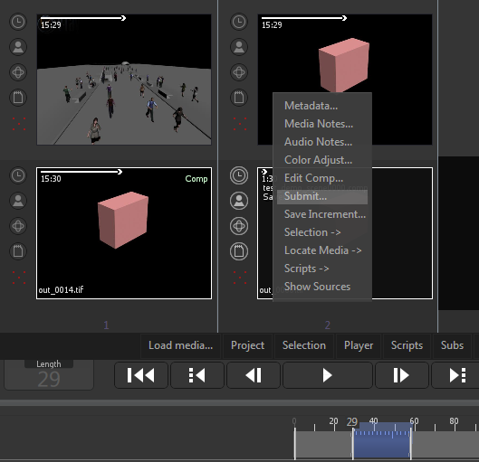
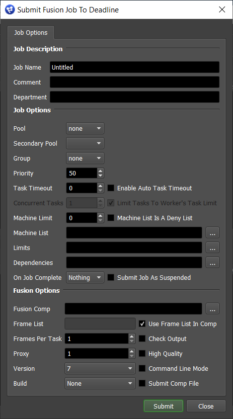

Generation¶
Job Submission¶
You can submit comp jobs to Fusion from within Generation by installing the integrated submission script. The instructions for installing the integrated submission script can be found further down this page.
In Generation, select the comp(s) you want to submit, and then right-click and select Submit.
This will bring up the submission window. Note that the submission window is only shown once, and all jobs that are submitted will use the same job settings.
Submission Options¶
The general Deadline options are explained in the Job Submission documentation. The Fusion options are:
Use Frame List In Comp: Uses the frame list defined in the comp files instead of the Frame List setting. If you are submitting more than one comp from Generation, you should leave this option enabled unless you want the Frame List setting to be used for each comp.
Proxy: The proxy level to use.
High Quality Mode: Whether or not to render with high quality.
Check Output: If checked, Deadline will check all savers to ensure they have saved their image file.
Version: The version of Fusion to render with.
Build: Force 32 or 64 bit rendering.
Command Line Mode: Render using separate command line calls instead of keeping the scene loaded in memory between tasks. Using this feature disables the High Quality, Proxy, and Check Saver Output options. This uses the FusionCmd plugin, instead of the Fusion one.
Plugin Configuration¶
The Generation submitter submits jobs to the Fusion plugin. See the Fusion Plugin Guide for information on configuring the Fusion plugin.
Integrated Submission Script Setup¶
The following procedures describe how to install the integrated Generation submission script. This script allows for submitting Generation comp jobs to Deadline directly from within the Generation editing GUI.
You can either run the Submitter installer or manually install the submission script.
Submitter Installer¶
Run the Submitter Installer located at
<Repository>/submission/Generation/Installers.
Manual Installation¶
Copy the file:
[Repository]\submission\Generation\Client\DeadlineGenerationClient.lua to [Generation Install Folder]\scripts\generation
In the Generation program data folder
%PROGRAMDATA%\eyeon\Generationor equivalent"%PROGRAMDATA%\[Black Magic Design Install Folder]\Generationdirectory, you’ll need to edit your Generation.cfg file. If you currently do not have a Generation.cfg file, create an empty one. Open your Generation.cfg file and add this:SCRIPT_FARMSUBMIT="scripts\generation\DeadlineGenerationClient.lua"
Save the file. The next time you start up Generation, this script will be used when you select the Submit option for the selected comps.
Error Messages and Meanings¶
The Generation submitter submits jobs to the Fusion plugin. See the Fusion Plugin Guide for Fusion error messages and meanings.

{kind=link}
{kind=link}